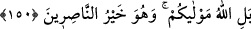

Ökçesi üzere geri dönmek: İşin ters yüz olmasına işaret olup nîmetten sonraki
kaybetme için darb-ı mesel olarak kullanılmaktadır.
“O zaman” dünyanın nîmetini de âhiretin sevabını da “büsbütün kaybedersiniz.”
Dünya nîmetini kaybedersiniz, çünkü akıl sahibi insanlara en ağır gelen şey,
düşmanlarına boyun eğip onlara muhtaç olduklarını göstermektir. Âhiret sevabını da
kaybedersiniz; çünkü ebedî sevaptan mahrûm kalarak ebedî azaba çarptırılırsınız.
150. Oysa sizin mevlânız Allah’dır ve O, yardımcıların en hayırlısıdır.
“Hayır” dostlarınız münâfıklar değildir ki, onlara itâat edesiniz, “mevlânız
Allah’dır.” Size yardım edecek olan da O’ndan başkası değildir. Öyleyse O’na itâat
edin ve O’ndan başka hiç kimsenin dostluğuna ihtiyaç duymayın. “Yardımcıların en
hayırlısı O’dur.” Dolayısıyla sadece O’na itâat edin; sadece O’ndan yardım dileyin.
151. Allah’ın, hakkında hiçbir delil indirmediği şeyleri O’na ortak koşmaları
sebebiyle, kâfirlerin kalplerine yakında korku salacağız. Gidecekleri yer de
cehennemdir. Zâlimlerin varacağı yer ne kötüdür!
“Allah’ın” kendisine ortak oldukları husûsunda “haklarında hiçbir delil” hüccet ve
burhan “indirmediği şeyleri O’na ortak koştuklarından dolayı inkâr edenlerin kalbine
korku salacağız.” Çünkü şirk, müslümanların muzaffer kılınıp kâfirlerin rezîl
edilmesini gerektiren husûslardan biridir.
Âyette geçen korku; Uhud günü, kâfirlerin kalbine salınan korkudur. Bu korku
yüzünden, her bakımdan üstün oldukları halde hiçbir sebep yokken savaşmayı bırakıp
ric’at etmişlerdir. “Ru’b” kelimesi, kalbin her tarafını kaplayan korku mânasındadır.
Delil anlamına gelen “sultan” kelimesi, aslında kuvvet demektir. Meselâ; “Sultanü’l-
melik” , hükümdarın gücü mânasına gelir. “Bir şeyi iddiâ edenin sultanı” demek ise;
görüşünü boşa çıkarmak isteyene karşı kişinin kendisiyle güç kazandığı delil mânasına
gelir.
Âyetin bu bölümünde, böyle konularda bâtıl heves ve görüşlerin değil, semâvî
huccetlerin esas alınacağı bildirilmektedir.
Âhirette “sığınacakları yer de cehennemdir.” Cehennemden başka hiçbir sığınakları
yoktur. “Zâlimlerin varacağı yer ne kötüdür!” Zâlimlerin varacağı yer olan cehennem